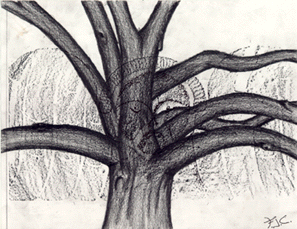

Student Project
Frank

"Time like a ceaseless rolling scream
Bears all its sons away
Disease attacks our feble frame
And all our powers decay
Swift to the dark and senseless dust
Our mortal flesh repairs"
-copied from a gravestone near the tree
c. Frank
Grade 11
Gill St. Bernard's School
Gladstone, New Jersey USA
Pencil Drawing done over a tombstone rubbing, 9 "X12"
White Oak
Latin Name: Quercus
Age: 600 years
Circumference: 20 feet at 54 inches from the base
Location: Basking Ridge, New Jersey
 Return to Main Page
Return to Main Page
June Julian jj68@nyu.edu